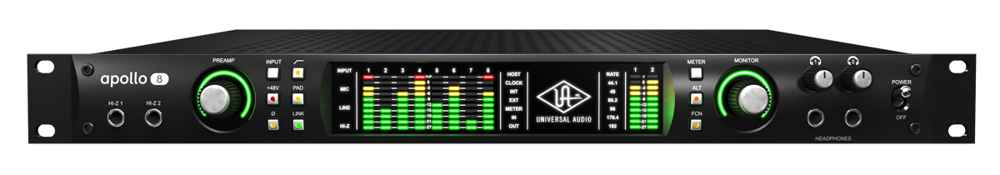

SM57

The Shure SM57 is a low-impedance cardioid dynamic microphone made by Shure Incorporated and commonly used in live sound reinforcement and studio recording. It is one of the best-selling microphones in the world.
Apollo 8p
Loaded with cutting-edge digital conversion and eight Unison-equipped preamps and UAD-2 QUAD core processing, the Universal Audio 16-in/20-out Apollo 8p Thunderbolt audio interface demonstrates exactly why the Apollo line has been one of the most popular audio-interface series
Logic Pro X
Logic Pro is a full-featured music and audio app you can use for every aspect of music creation: recording, arranging, mixing, and more–everything from sketching your initial ideas to producing polished final mixes.
Little Mark Vintage

Offering lots of sound options and features really satisfying all bass players searching for both modern tones or old school ones.
SM58

The Shure SM58 is a unidirectional (cardioid) dynamic vocal microphone for professional vocal use in sound reinforcement and studio recording. A highly effective, built-in, spherical filter minimizes wind and breath “pop” noise. ... The SM58 has a tailored vocal response for a sound which is a world standard.
Scarlett 2i2

Scarlett’s best-selling interface – millions of musicians use 2i2 to write and record every day. Featuring natural sounding 3rd Gen mic preamps, and Air, emulating our original ISA preamps, 2i2 is getting musicians the most from their mics everywhere, all the time.
TubeMeister Deluxe 40

TubeMeister Deluxe is simply jaw dropping. Deluxe tones take you from pure, pristine cleans to an authentic brown sound and devastatingly powerful modern-day high gain, all influenced by the most beloved channels of our flagship TriAmp Mark 3.
C214

The AKG C214 delivers AKG's classic large-diaphragm sound - and it's also capable of an impressive 143dB dynamic range for uncompressed, natural transients.
Pro Tools

Pro Tools is a digital audio workstation (DAW) developed and released by Avid Technology (formerly Digidesign)[1] for Microsoft Windows and macOS.[2] It is used for music creation and production, sound for picture (sound design, audio post-production and mixing)[3] and, more generally, sound recording, editing, and mastering processes.
A7X

It is one of the most balanced and versatile speakers currently on the market. The X-ART tweeter produces detailed, uncompressed highs and upper mids without being tiring over long listening periods. Despite its compact housing, the bass response is powerful and precise.